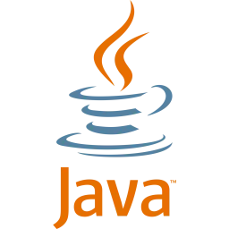
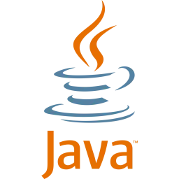

I developed an application programmed in Java aimed to help high school students prepare for IB mathematics via playing the popular arcade game “Super Mario”. This project consisted of 3 aesthetically attractive graphical user interfaces: an admin console to manage users and content, a teacher interface to add teaching material, math questions, and view students’ scores, and a student interface that combines math quizzes and Super Mario. A video demonstration of this project is linked below.
--SUPERMATHIO DEMO LINK--Project 1:
SUPERMATHIO
Project 2:
Game Development Project
In collaboration with a classmate, I developed a Python script that offers users the opportunity to play three popular games: Wordle, Hangman, and Tic-Tac-Toe. Our “Wordle” program Replicates Wordle by the New York Times, where the user has 6 guesses to guess a word right. If the user’s guess contains a correct letter in the correct place then the letter turns green. However, if the letter is correct but in the incorrect place then it turns yellow. Our Hangman game provides a user interface and visualizations for in-game process. For Tic-Tac-Toe, we implemented an automated opponent, allowing users to play against the computer. Players can choose to play as X (taking the first turn) or O (playing second), adding strategic depth to the game.
Project 3:
Panda Express - Point of Sale and Inventory Solution
For my next project, I'm excited to dive into developing a point-of-sale and inventory management system for a Panda Express restaurant. I'll be working with a team to create a comprehensive solution that includes a PostgreSQL database hosted on AWS and a Java-based graphical user interface. Our system will cater to both cashiers and managers, allowing for efficient order processing and inventory analysis. This project will give me hands-on experience with full-stack development, cloud services, and collaborative software engineering practices like pair programming and code inspections. Overall, this project presents an excellent opportunity to apply my skills to a real-world scenario and gain valuable experience in developing enterprise-level software solutions.


 
